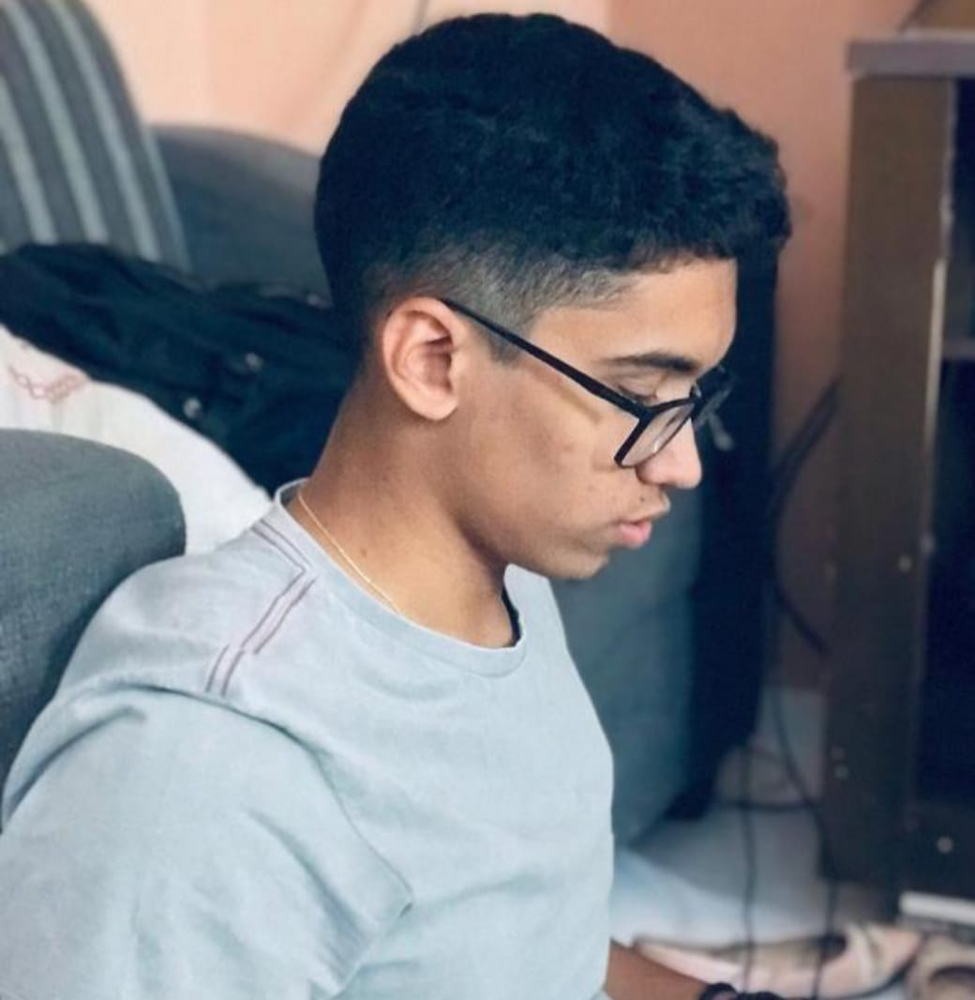
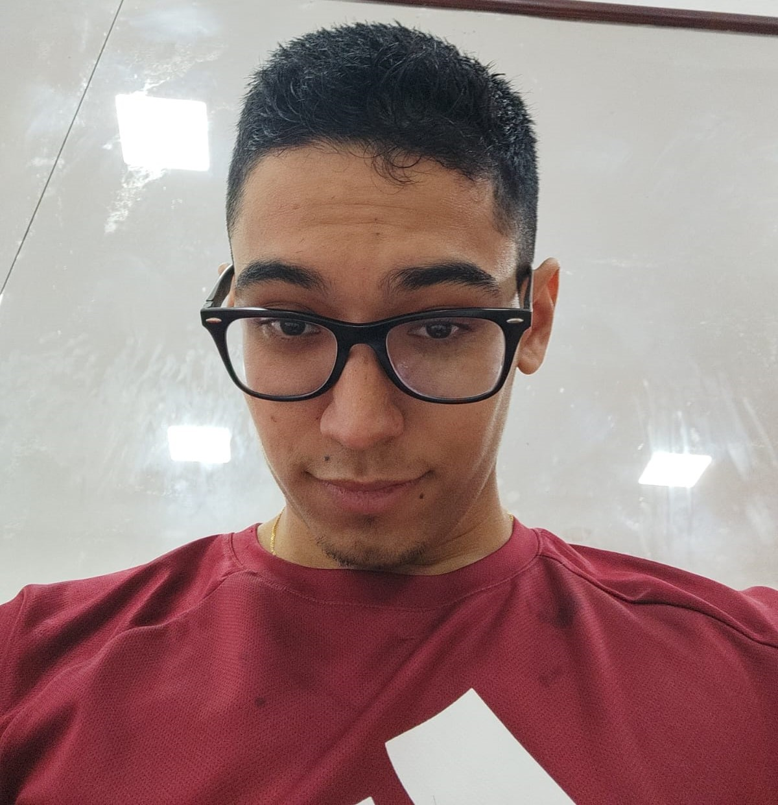

Who I am?
My full name is Davi José Cunha Santos, and I'm a 22-year-old guy born and raised in the city of Teresina in the state of Piauí here in Brazil. I've been deeply interested in technology from a young age, mainly because I enjoy gaming on the computer so much. I've always been available to assist anyone with computer-related matters, both at school and at home, and currently, I'm studying for a career in software development.

What I know?
I excelled in a Catholic school, engaging in science and math competitions. I improved my computer skills through typing and document formatting. I'm currently studying Computer Science at the Federal University of Piauí and honing my software development skills, including JavaScript, Python, React, React Native, and TypeScript. I'm always seeking new programming challenges.

How I am?
I am very dedicated when I commit to something. In a team, I always seek help from my colleagues or the leader to exchange knowledge and reach our goals together. I actively pursue challenges, and even when faced with difficulty, I study and research to ensure I do things properly. I am also very sociable, enjoying conversations and listening. During my free time, I like to play video games with my friends and engage in physical activities.